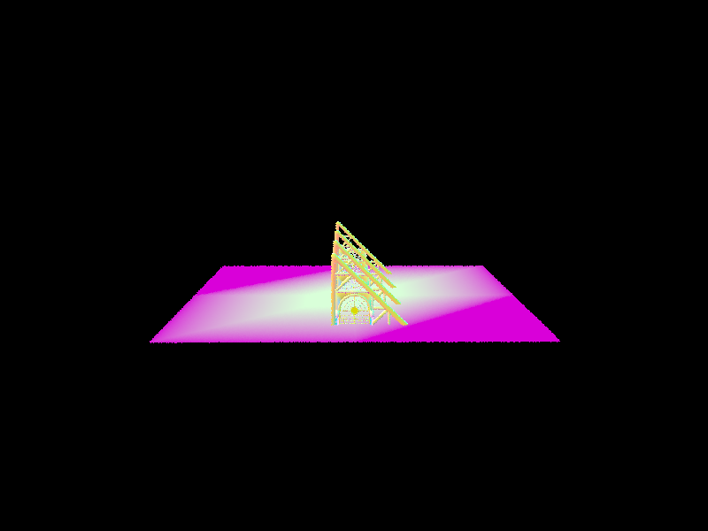

In part 1, we generated a ray from camera to image plane and transformed it to the world space. We also wrote ray-triangle and ray-sphere intersection tests, which are building blocks for ray-tracing rendering algorithms.
Use this section to write an overview of the assignment. All of the text in your write-up should be in your own words. If you need to add additional HTML features to this document, you can search the http://www.w3schools.com/ website for instructions. To edit the HTML, you can just copy and paste existing chunks and fill in the text and image file names appropriately.
If you are well-versed in web development, feel free to ditch this template and make a better looking page. Just make sure that you include all the components as we've laid them out here.
Part 1: Ray Generation and Intersection
In task 1, we generated a ray from camera to image plane and transformed it to the world space. In task 2, we uniformly sampled rays across every pixel on the image plane and averaged their evaluated color as the final color for the pixel. In task 3, we wrote a ray-triangle test which composes of: 1) ray-plane intersection; 2) point-in-triangle test using barycentric coordinates. In task 4, we wrote a ray-sphere test which uses the quadratic formula for the roots of quadratic equations.

|

|
Part 2: Bounding Volume Hierarchy
INSERT HERE

|
|

|
|
BVH performance comparison on peter.dae: Without BVH: [PathTracer] Building BVH from 40018 primitives... Done! (0.0004 sec) [PathTracer] Rendering... 100%! (31.6675s) With BVH: [PathTracer] Building BVH from 40018 primitives... Done! (0.0222 sec) [PathTracer] Rendering... 100%! (0.0443s)
Part 3: Direct Illumination
INSERT HERE

|

|
INSERT HERE.
|
|

|

|
|
INSERT HERE.
Part 4: Global Illumination
INSERT HERE
Here is an example of how to include a simple formula:
a^2 + b^2 = c^2
or, alternatively, you can include an SVG image of a LaTex formula.
This time it's your job to copy-paste in the rest of the sections :)
Part 5: Adaptive Sampling
In part 5, we implemented adaptive sampling using two helper variables sample_sum and
sample_squared_sum, which is the s1 and s2 mentioned in the part 5 guideline. We update
these two variables as we generate new pixel ray samples and use them to compute the indicator
I. And the test whether it lies in the product of maxTolerance and mean. If so, we break
out of the for loop and divide the accumulated radiance by the sample count so far.
|
|

|
We can see from the rate image that the three walls and the floor converges very quickly. This is reasonable since they receive direct strong radiance from the light source on the ceiling, making other lights bounce on them less important.
The ceiling converges very slowly because there is hardly any direct lights bounce on it. Most of the radiance it receives is from more than one bounces.
Similar observation applies on the bunny. The surfaces with top pointing normal converges quickly as most of the radiances come from the light source. However, other surfaces converge slowly because they are not directly lighted and need to be updated according to more than one bounces.